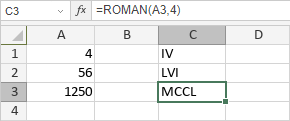

ROMAN funkcija
ROMAN funkcija je jedna od matematičkih i trigonometrijskih funkcija. Funkcija se koristi za konverziju broja u rimski broj.
Sintaksa
ROMAN(broj, [format])
ROMAN funkcija ima sledeće argumente:
| Argument | Opis |
|---|---|
| broj | Numerička vrednost veća ili jednaka 1 i manja od 3999. |
| format | Tip rimskog broja. Opcioni argument. Moguće vrednosti su navedene u tabeli ispod. |
format argument može biti jedna od sledećih vrednosti:
| Vrednost | Tip |
|---|---|
| 0 | Klasican |
| 1 | Kompaktniji |
| 2 | Kompaktniji |
| 3 | Kompaktniji |
| 4 | Pojednostavljen |
| TRUE | Klasican |
| FALSE | Pojednostavljen |
Napomene
Kako primeniti ROMAN funkciju.
Primeri
Slika ispod prikazuje rezultat koji vraća ROMAN funkcija.
